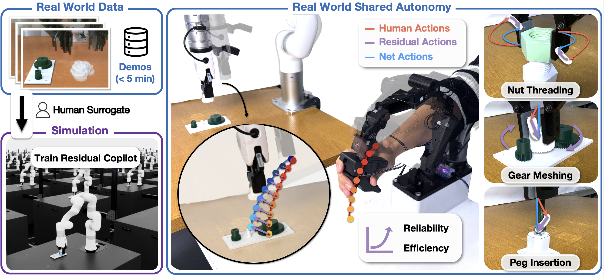
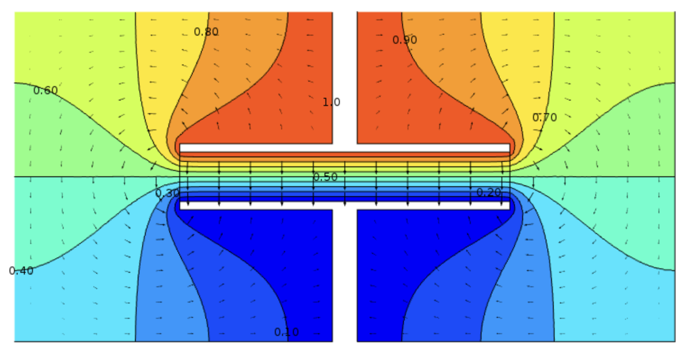

Shuo Sha
ss7050@columbia.edu
I'm an undergraduate student in Applied Mathematics and Computer Science at Columbia University, working in the RoboPIL Lab advised by Prof. Yunzhu Li. I'm fortunate to receive mentorship from Prof. Antonio Loquercio and Prof. Brian Plancher.
My research interests lie in the intersection of robotics, machine learning, and perception, with the aim of equipping physical agents with more robust, capable, and efficient skillsets to accomplish tasks and interact with the open world.
If you would like to collaborate, feel free to reach out!
Research
-

Efficient and Reliable Teleoperation through Real-to-Sim-to-Real and Shared Autonomy
Under Review -
-
-

Analysis of 2D Maxwell's Equations in a Time-Harmonic Regime
Journal of Mathematics Research 2023, [paper]